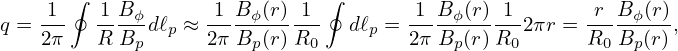
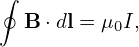

As is discussed in Sec. 3.2, to satisfy the force balance, g ≡ RBϕ must be a magnetic surface function, i.e., g = g(Ψ). Using this, expression (49) and (50) are written
|
| (523) |
and
|
| (524) |
respectively. The above two equations imply that
 | (525) |
which implies that the projections of B lines and J lines in the poloidal plane are identical to each other. This indicates that the J surfaces coincide with the magnetic surfaces.
The poloidal plasma current density is usually small (compared with the toroidal plasma current density) but is important for some cases of interest and thus could not be safely neglected. Many model equilibria (e.g., Solovev equilibria, DIII-D cyclone base cases) frequently used in simulations assume that g is a spatial constant, i.e., neglecting the poloidal plasmas current. The conclusions drawn from these simulations could be misleading.
Using this and ∇⋅ J = 0, and following the same steps in Sec. 1.4, we obtain
![1
Ipol = μ-2π[g(Ψ2) − g(Ψ1 )],
0](tokamak_equilibrium663x.png) | (526) |
where Ipol is the poloidal current enclosed by the two magnetic surfaces, the positive direction of Ipol is chosen to be in the clockwise direction when observers look along . Equation (526) indicates that the difference of g between two magnetic surface is proportional to the poloidal current. For this reason, g is usually call the “poloidal current function”.
In the above, we see that the relation of g with the poloidal electric current is similar to that of Ψ with the poloidal magnetic flux. This similarity is due to the following differential relations:
|  |
|  |
The poloidal plasma current density Jp can be further written as
Using g = g(Ψ), Eq. (527) can also be written as